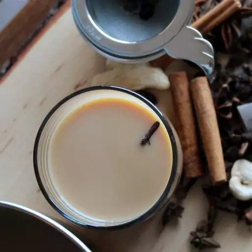

Masala Chai

Easy and Authentic Indian Masala Chai
Wake your mind and body up with a warm cup of Masala Chai!
Ingredients
- 1 1/2 cups water
- 1 (1/2 inch) piece fresh ginger, chopped
- 4 whole cloves
- 1/2 cinnamon stick
- 5 pods green cardomom pods, crushed
- 1 pod black cardamom, split open
- 2 black tea bags
- 2/3 cup milk
- 2 tablespoons white sugar
Steps
- Bring water to a boil in a small pot.
- Add ginger, cloves, cinnamon stick, green cardamom, and black cardamom.
- Simmer until flavors infuse, about 5 minutes
- Add tea bags; simmer for 1 to 2 minutes.
- Add milk and sugar; bring back to a boil. Strain tea into mugs.